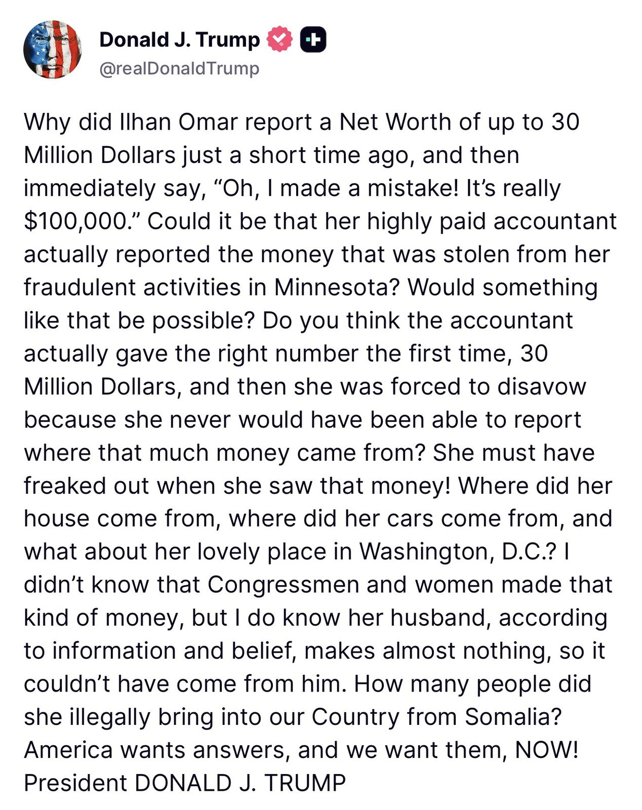

Today, the U.S. Department of the Treasury announced enforcement actions imposing more than $1.21 billion in penalties against Bank of America for violations of anti-money laundering and sanctions laws.
These actions represent the third-largest penalty in Treasury history and the largest in @USOCC history.
Broadening access to XRPL, from everyday payments to agentic commerce.
We’re partnering with @privy_io, a Stripe company, to bring embedded wallets to the XRP Ledger. Developers will be able to build payment experiences with XRP, RLUSD and other digital assets on XRPL directly into their products, without requiring users to manage their own keys.
The integration will also enable agentic commerce through programmable wallets that let AI agents hold funds and transact, including through x402 payments.
Built for payments, XRPL is already powering the next wave of commerce. To date, it has processed 13M agent payments, which now account for roughly 25% of network activity.
BREAKING: #BNY completes first-of-its-kind transaction with tokenized assets on major triparty repo platform in collaboration with @Citadel Securities.
A 2-year U.S. Treasury note was #tokenized on BNY's private digital ledger, settled within minutes, and used as collateral in an overnight triparty repo—demonstrating how traditional and digital infrastructure can work together to improve settlement speed and collateral mobility. (1/2)
Release: https://www.bny.com/corporate/global/en/about-us/newsroom/press-release/bny-completes-tokenized-us-treasury-triparty-repo-workflow-with-citadel-securities.html
THE BLOCK: South Korea's KB Kookmin Card has signed an MOU with Japan's SBI Holdings to test identity checks for AI agents and explore cross-border crypto payments.
The partnership will examine ways for Japanese tourists to use crypto assets, including stablecoins, to pay South Korean merchants.
Institutions are figuring out how tokenized equities fit into the markets they already use.
@Ripple Prime clears and finances trades across traditional and digital markets. It plans to support Securitize Stocks and explore bringing them into its broader trading ecosystem.
DTCC's Fund/SERV, which processes more than 85% of US mutual fund transaction activity, has added Ondo Finance as its first tokenization member. Ondo's US broker-dealer Oasis Pro Markets holds the membership.
@Ondo
LATEST: 🏦 Citi will let institutional clients take stablecoin payments at checkout through Spring by Citi, with Coinbase converting them to fiat so merchants never hold crypto.
JUST IN: 🇺🇸 Wells Fargo CEO says the bank is preparing for potential crypto stablecoin opportunities in the US.
JUST IN: 🇺🇸 Citadel Securities and BNY complete first blockchain-based tokenized US Treasury transaction.
BREAKING: For the first time, Yemen's Houthis declare they will strike Saudi Aramco's headquarters building and complex in Dammam, as well as Aramco's Riyadh oil refinery, and King Khalid International Airport in Riyadh, if the Saudis strike Sanaa's oil depot.
Initial reports indicate Saudi Arabia has struck Sanaa's Al-Sabaha oil depot minutes ago, triggering the named retaliation.
The @Treasury and @USOCC today announced a $750 million civil money penalty against Bank of America for violations of the Bank Secrecy Act and its implementing regulations. This amount is the largest in OCC history. Read more at https://occ.gov/news-issuances/news-releases/2026/nr-occ-2026-89.html.

#BREAKING: Ilhan Omar's staff got her birthdate changed officially after being elected to Congress.
#BREAKING: The DOJ just subpoenaed Ilhan Omar's relatives in a federal investigation.
DOJ Announces Charges for 16 Individuals Accused of Election Crimes, Including Illegal Alien Voting
Foreign National Arrested, Charged with Voting in 2024 Election in Swing State Pennsylvania
BREAKING NEWS
DEMOCRATIC REPUBLIC OF CONGO’S CENTRAL BANK WILL SOON REQUIRE A RANGE OF PAYMENTS TO BE MADE IN FRANCS INSTEAD OF DOLLARS
The trend continues...
BREAKING: DOJ arrests 2 Americans, seizes 187 devices in crackdown on North Korean “laptop farms” allegedly used to infiltrate more than 70 U.S. companies.
Hundreds of child marriages revealed in Germany - with girls as young as 11 married to Iraqis, Syrians and Pakistanis
#BREAKING: U.S. Army deploys hundreds more troops to Rio Grande Valley over cartel activity.
#BREAKING: DHS to end policy letting H-1B extensions ride on prior approvals.
Alberta to vote on whether to pursue secession from Canada on October 19.